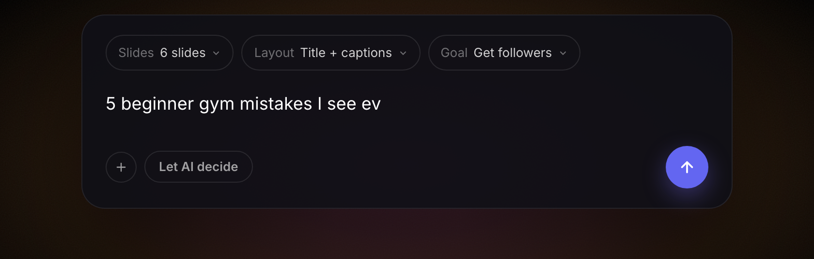
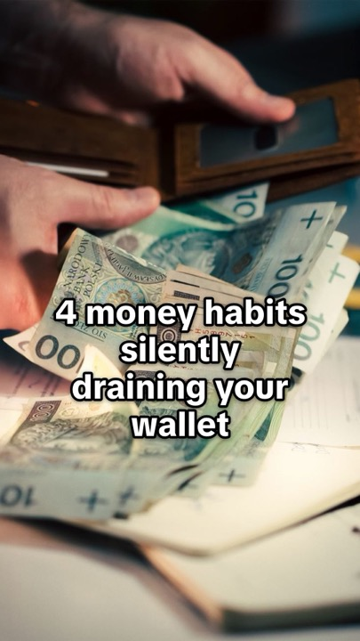
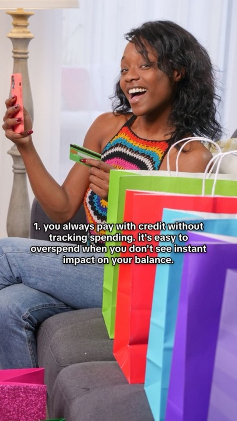
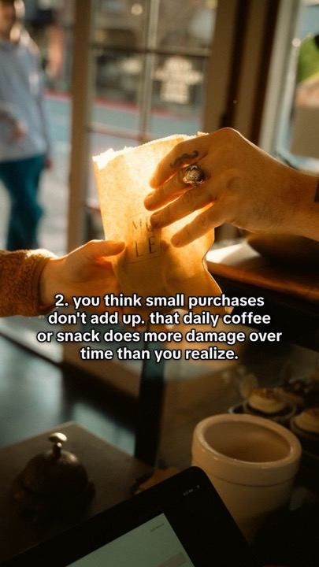

For Gomez Landscape & Tree Care
A tool that turns your job-site photos into finished TikTok slideshows and posts them for you. Ten minutes.
What it does

Real slides from the tool — hook first, then something a stranger can actually use. That's what gets watched, and it's where a certified arborist beats everyone else posting about trees.


